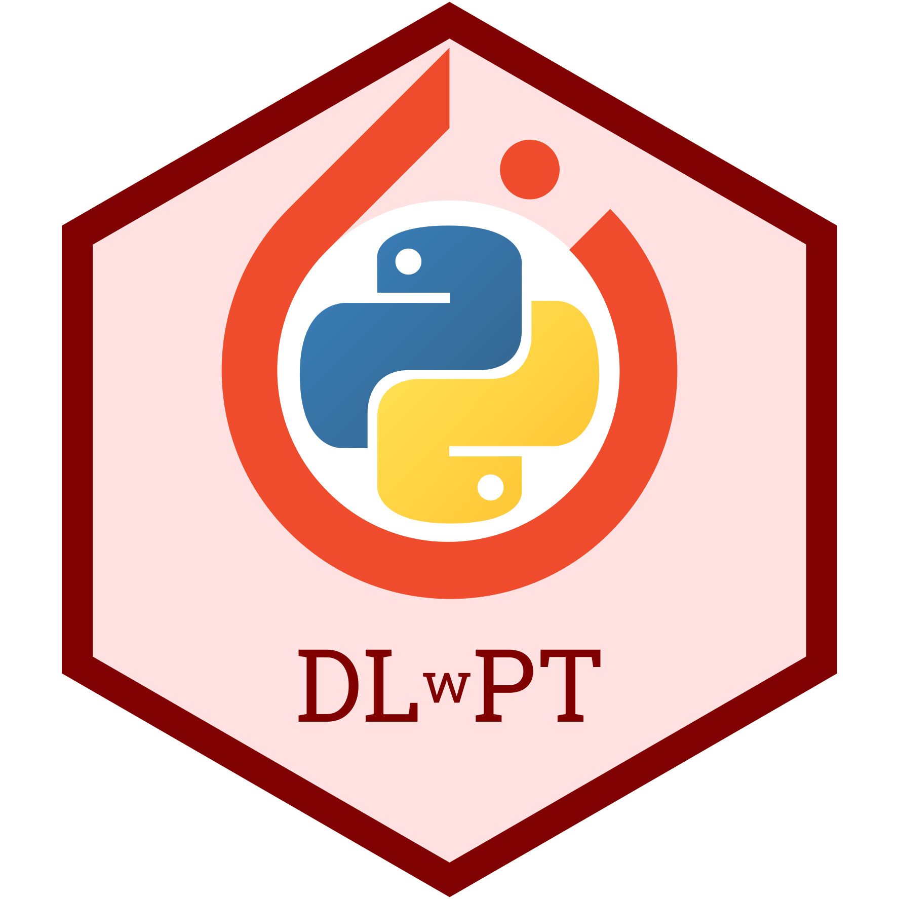

Deep Learning with PyTorch
By Tomas Beuzen 🚀
Welcome to Deep Learning with PyTorch! With this website I aim to provide an introduction to optimization, neural networks and deep learning using PyTorch. We will progressively build up our deep learning knowledge, covering topics such as optimization algorithms like gradient descent, fully connected neural networks for regression and classification tasks, convolutional neural networks for image classification, transfer learning, and even generative adversarial networks (GANs) for synthetic image generation!

If you’re interested in learning more about Python programming, you can check out my other online material Python Programming for Data Science. Or, if you’d like to learn more about making your very own Python packages, check out my and Tiffany Timber’s open-source book Python Packages.
The content of this site is adapted from material I used to teach the 2020/2021 offering of the course “DSCI 572 Supervised Learning II” for the University of British Columbia’s Master of Data Science Program. That material has built upon previous course material developed by Mike Gelbart. A big thank you also goes to Aaron Berk who helped transition the course from Tensorflow to PyTorch.
Chapter Outline
Getting Started
The material on this site is written in Jupyter notebooks and rendered using Jupyter Book to make it easily accessible. However, if you wish to run these notebooks on your local machine, you can do the following:
Clone the GitHub repository:
git clone https://github.com/TomasBeuzen/deep-learning-with-pytorch.gitInstall the conda environment by typing the following in your terminal:
conda env create -f dlwpt.yamlOpen the course in JupyterLab by typing the following in your terminal:
cd deep-learning-with-pytorch jupyterlab
If you’re not comfortable with
git,GitHuborconda, feel free to just read through the material on this website - you’re not missing out on anything!